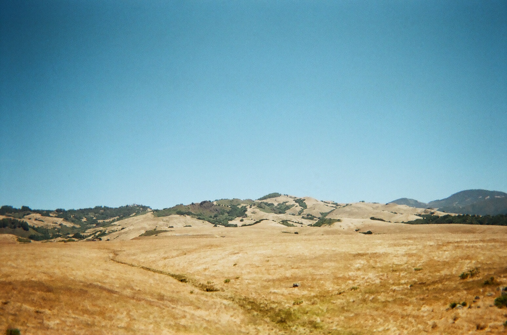
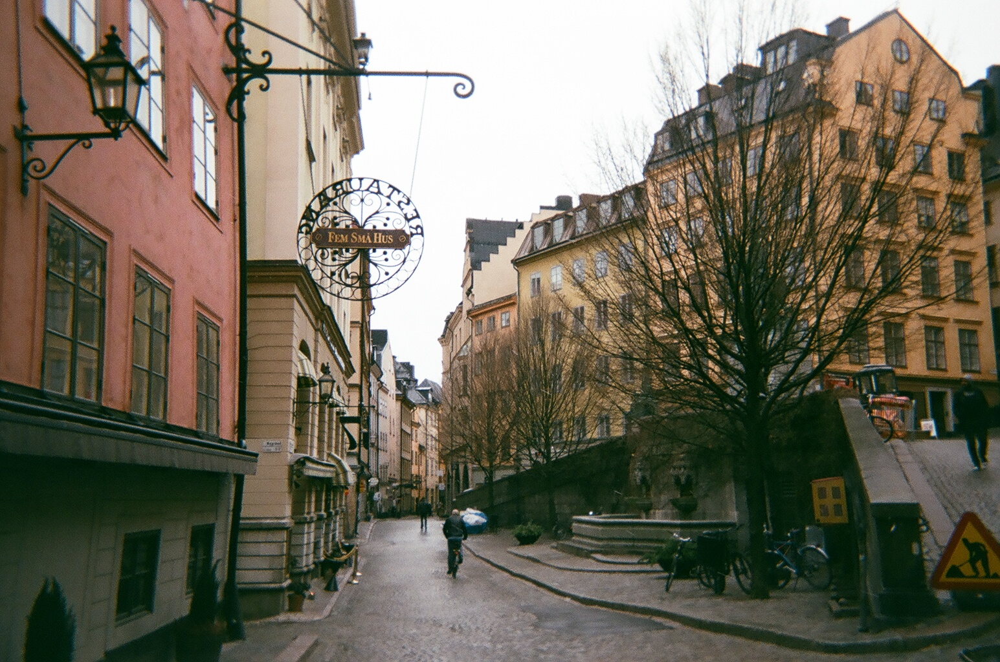

Film Photography
I've always loved taking photos because it captures a moment before it’s gone. At the beginning of last summer, I found a film camera, Contax T2, from my grandfather's old desk. Since then, I am in love with film photography because there is something about film that's captivating. I hope you can feel the moment I was at from the following photos... if not then hope you enjoy them anyway! ( I'm a film photography novice so excuse the frequent out-of-focus shots and such! )




